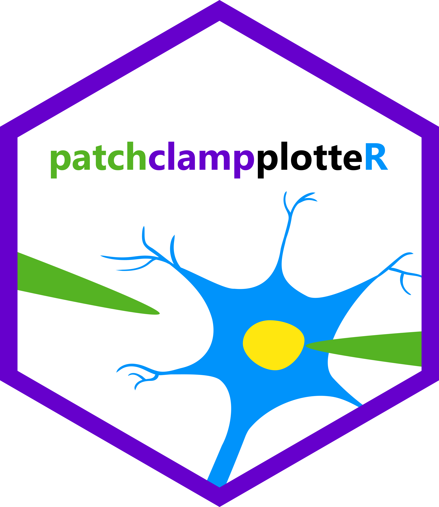
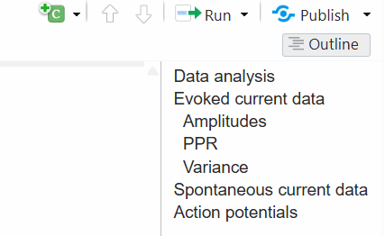
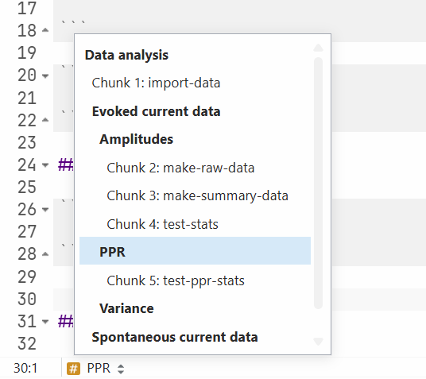
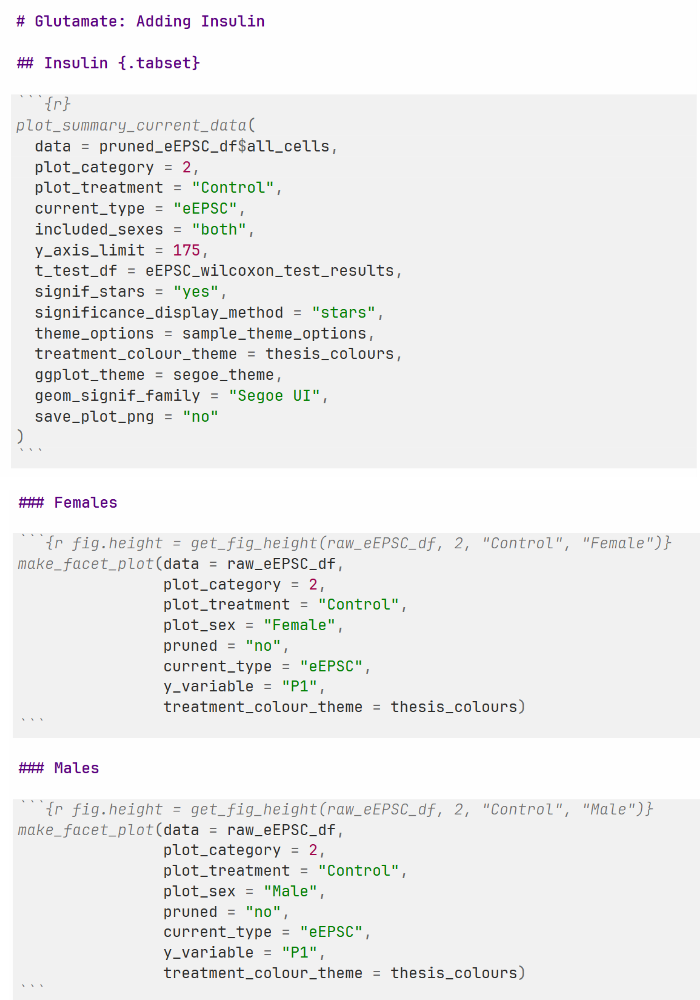

Tips for Code Organization
Source:vignettes/articles/tips-for-organizing-your-code.Rmd
tips-for-organizing-your-code.RmdWhen analyzing electrophysiology data, you will often end up with an
.Rmd file that is very long and unwieldy to scroll through.
This article will provide you with some tips for good Markdown writing
habits that will make your documents more manageable. I will also show
you how you can use source() to refer to external
.R scripts. This will make your documents even shorter and
enable you to split up into different files for analyzing data, creating
plots, and later, even writing different chapters of a thesis. You can
even export your plots and into an attractive, easy-to-read HTML
document to make it easy to show to others.
Tip 1: Use Markdown headers
Markdown is a plaintext writing language that you are probably already familiar with from writing online. You can use two **asterisks** to make text bold, or one set each for italicized text. You can use hashtag symbols (#) to specify headers.
For example, let’s say that your coding document has the following structure:
- Data analysis
- Evoked current data
- Amplitudes
- PPR
- Variance data
- Spontaneous current data
- Action potentials
- Evoked current data
- Plots
Try it out! Create an empty .Rmd file and write down the following sample outline:
# Data analysis
## Evoked current data
### Amplitudes
### PPR
### Variance
## Spontaneous current data
## Action potentialsThe headings should change to a different colour in RStudio. You can
now use the Outline tool, available as a pop-up in the
upper-right corner of the screen.

Tip 2: Name your chunks
You can name code chunks which will assist with navigation and make error tracing easier.
So instead of this:
```{r}
```
Type this:
```{r import-data}
```
After the chunk name, you can also type a comma and then use chunk
options like fig.width=7, fig.height=5,
eval=FALSE, etc.
```{r import-data, message=FALSE}
```
The author of the knitr package has listed all the chunk options and how to use them on their knitr chunk options page.
Note! Ensure that you do not duplicate any chunk names, or R will display warnings when trying to knit the document.
Note! The chunk names must not have any spaces or start with a number.
Now you can use the navigation bar at the bottom left of the Source
pane to quickly jump to different code chunks or use Ctrl+F
to search for the chunk!

Tip 3: Learn keyboard shortcuts!
You probably already know shortcuts like Ctrl+C to copy
and Ctrl+V to paste, but there are some shortcuts specific
to RStudio that will speed up your coding time.
Inserting a chunk
For example, use Ctrl+Alt+I (or Cmd+Alt+I
on a Mac) to quickly insert a new empty R chunk.
```{r}
```
Inserting a pipe symbol
To insert the pipe symbol %>% when stringing
functions together, use Ctrl+Shift+M. It is faster than
reaching for the % key!
Inserting the assign symbol
Use the assign symbol (less-than sign then a hyphen
<-) not the equal sign (=) when naming
variables. For example, use x <- 2 not
x = 2. You can use the Alt+- (alt + hyphen
key) to quickly insert this symbol.
Run code in a chunk only
You do not have to highlight/select a line of code to run it! To run
the code in one chunk only, place your cursor anywhere in the chunk and
type Ctrl+Shift+Enter. To run only a single line, put your
cursor at the end of it and type Ctrl+Enter.
You can also put your cursor at the end of a dplyr series of
functions (frequently connected by the %>% symbol) or
ggplot code and press Ctrl+Enter to run the function or
generate the plot.
Switch between panes
It can be handy to switch between the Source pane
(where you are writing code and text) to the Console
pane (handy for quick calculations, math, and testing code that you
don’t want to keep). Use Ctrl+1 and Ctrl+2 to
jump from one pane to the other. It will automatically jump your cursor
into the available space and you can start typing!
Comment/uncomment lines
Select code that you don’t want to run and then use
Ctrl+Shift+C to comment out all the lines in one move.
Jump to any file or function
Use Ctrl+. to open a search box. As you type, it will
bring up functions, code snippets, and files within your R project!
Clean up code
Use Ctrl+Shift+A to automatically clean up messy or
cramped code and adjust the spacing according to good coding practice.
This brings me to the next tip!
Tip 4: Clean up your code
Good coding practices include things like including spaces before and
after operator signs. For example, write x <- 2 + 2 not
x<-2+2.
If you are using ggplot2 you should end each line with
the + symbol then start the next line. Each layer (whether
it is data, labels, or formatting) should have its own line.
This is an example of properly formatted code.
penguins %>%
ggplot(aes(x = bill_len, y = flipper_len, colour = species)) +
geom_point(size = 3, alpha = 0.7) +
labs(x = "Bill length (mm)", y = "Flipper length (mm)", colour = "Species") +
theme_minimal() +
theme(axis.title.x = element_text(size = 15, margin = margin(t = 20)),
axis.title.y = element_text(size = 15, margin = margin(r = 20)))It is good to get into these habits as you are writing code, but there are also handy tools to format code after it is written.
RStudio has a built in code formatting tool. Use
Ctrl+Shift+A to clean up selected code or use
Code -> Reformat selection.
Tip 5: Use an R project and keep it organized
If you have set up your document using the instructions on the Getting
Started page, you should hopefully already have an
RProject set up. I encourage you to keep it maintained.
Open RStudio every time using your
.Rprojfile, or once you have RStudio open, click onFile->Open Project. This will allow you to use theherepackage to easily refer to files in subfolders with relative paths (e.g.Data/Raw-CSVs/20240503-Raw-Data.csv) instead of absolute paths (e.g.C:/Users/cslau/OneDrive/Desktop/Masters-Work/masters-thesis/Data/Raw-CSVs/eEPSC-Data/20240503-Raw-Data.csv).Keep folders specific (e.g.
Data,Figures,Paper) and only put things in them that belong there.Keep your README.txt file up to date so that when you look at it years later, you can quickly orient yourself to what is in each folder and what the project is about. The README file should be a simple, plaintext document with a description about the project, names and contact info, and a brief summary of the folders and their contents.
Tip 6: Prevent clutter in R and your code
It is important that you do not have old variables, loaded packages, and other named objects cluttering your environment. The code should only include the packages and variables that you need for this project.
In Tools -> Global Options be sure to
UNCHECK
Restore .RData into workspace at startup and set
Save .RData to workspace on exit to NEVER. R will
shut down and open faster.
To speed up loading time when you open RStudio, you can also uncheck
Restore most previously opened project at startupandRestore previously open source documents at startup, but this does mean you will have to open them each time. I recommend this only if you find that RStudio is slow to open, or if you like having a clean slate each time.
To prevent old variables and named objects from cluttering your
environment, frequently click on the drop-down arrow next to the
Run button and click on
Restart R and Clear Output.
As you are coding, you will develop new ways to make your code as streamlined as possible. It is sometimes fun to see how short you can make your code. For example:
- Could you use functions like
across()fromdplyrinstead of repeating the same function for each column? - Do you need to use all the arguments for a function, or are the default values (visible in the help page for the function) sufficient?
- If you have to repeat code multiple times, you should write a custom
function or find ways to shorten it. If you come from other coding
languages, you may want to use loops, but R is even more efficient with
lists. Consider storing items in lists and then running a function on
each element of that list. For example
c(1, 2, 3) + 2will automatically add 2 to each element of the list, resulting inc(3, 4, 5).
Tip 7: Set common settings once
Instead of repeatedly writing chunk settings like
echo=FALSE for each chunk in your document, set this in a
chunk at the top of your document and it will apply to all chunks below.
Here is an example of what my setup chunk often looks like:
knitr::opts_chunk$set(
dev = "png",
fig.align = "center",
out.extra = "",
out.width = "75%",
dpi = 300,
comment = NA,
message = FALSE,
warning = FALSE,
echo = FALSE
)The comment = NA will remove the double #
symbols that R prints out when displaying results. Set
FALSE for message, warning, and
echo. This will print the output of the chunk (numbers,
plots, etc.) but hide the chunk itself and any messages/warnings. You’ll
still see them when running them yourself in R. Feel free to change the
dpi (dots-per-inch) if needed.
The setup chunk can get very long and specific. Here is an example of
the setup chunk for my thesis, where I had some settings specific to
making a nice PDF. The fig.path option enables output
figures to go to a subfolder.
knitr::opts_chunk$set(
dev = c("cairo_pdf"),
dpi = 600,
fig.width = 12,
fig.height = 12,
out.width = "\\linewidth",
fig.align = "center",
comment = NA,
message = FALSE,
warning = FALSE,
echo = FALSE,
fig.path = "Thesis-Figures/"
)Tip 8: Source your documents
Right after your setup chunk, I strongly suggest having separate
.R scripts for data import, statistical analysis, and plot
generation. This will make them shorter and you can just source these
scripts anywhere you want to have the data available. You could even
consider having an .R script called
Libraries.R to load commonly used libraries and reduce
repetition.
Create an .R file and copy the content of the chunks
(only the content, not the chunk labels or settings, or closing
backticks). Consider creating R scripts like Import-data.R
and Make-plots.R.
Now, how do you get the data into your R environment in a separate
document? You must source these script files in the correct order. For
example, Make-plots.R will give you errors if you try to
run it before you’ve sourced Import-data.R.
At the top of your thesis document, create a chunk where you source
these scripts. I have kept my .R files in the
Scripts subfolder of my project so that is why I have
Scripts/ in the filepath. It will look like this:
source(here::here("Scripts/Import-Data.R"), local = knitr::knit_global())
source(here::here("Scripts/Plot-generator.R"), local = knitr::knit_global())It is important to have the local = knitr::knit_global()
statement because this will enable R to include these scripts (and the
data and plots they produce) while knitting your document to a PDF or
HTML.
Tip 9: Use the patchwork package or facet plots
You can use the patchwork package to put multiple plots together.
Install the package and then load it with
library(patchwork). You can then present multiple plots in
one chunk by adding them together.
For example p1 + p2 will result in two plots displayed
side-by-side, and (p1 + p2)/(p3 + p4) will result in a grid
of four plots arranged in a 2 pattern. I encourage you to read the
patchwork documentation for more guidelines.
Tip 10: Showcase your work!
This last tip is the culmination of all former tips. It will help you display your data in an attractive, convenient way – using HTML!
When you want to show your data and plots to others, it can be awkward to scroll through long script files and re-run chunks to show plots. I highly recommend creating a simple document focused only on presenting the key facts. This could include:
- A table of cell counts per group and sex
- A series of plots of your raw data with separate tabs for each sex
(use
.tabsetnext to the header to make all subheadings appear on separate tabs!). - Summary plots per group and sex
The last two would be repeated for as many groups that you have, separated by headers. Ideally this document would have a table of contents so you can jump quickly to the group you want to examine.
The document will have the following chunks:
- The setup chunk
- The chunk where you source external scripts for importing your data and making plots
- A chunk for displaying the table of your cell counts (hint: use the
summary data
$mean_SEfrommake_summary_current_data!) - A chunk displaying the raw plots
- A chunk displaying the summary plots
The last two chunks would be repeated for as many groups that you have, separated by headers. Ideally this document would have a table of contents so you can jump quickly to the group you want to examine.
To make this document, click the Knit button and choose
HTML (the next time you do this, it will automatically choose HTML for
you). You can customize this with your own .css file or
choose from the many themes available by default. I’ve included an
example of how you could change the html theme and enable a floating
table of contents.
---
title: "Plot Viewer"
author: "Type your name here"
date: "September 01, 2026"
output:
html_document:
theme: cosmo
toc: true
toc_depth: 3
toc_float:
collapsed: false
smooth_scroll: false
---To help get you started, I’ve included an excerpt of what part of
this document could look like from my own Plot-Viewer.Rmd
file:
